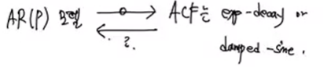
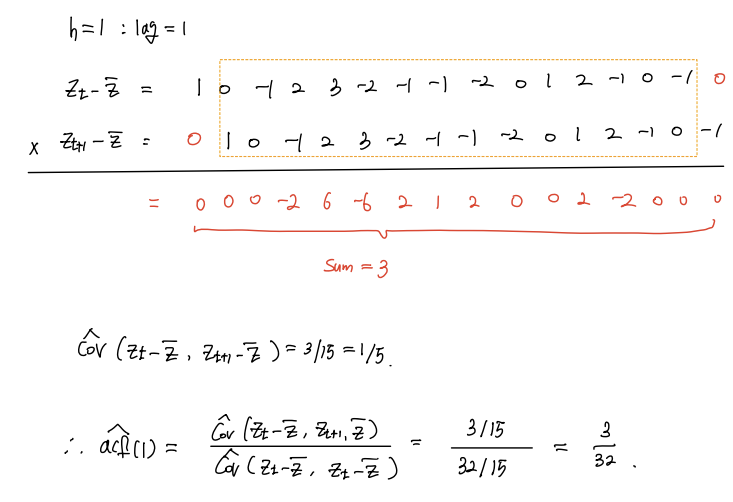
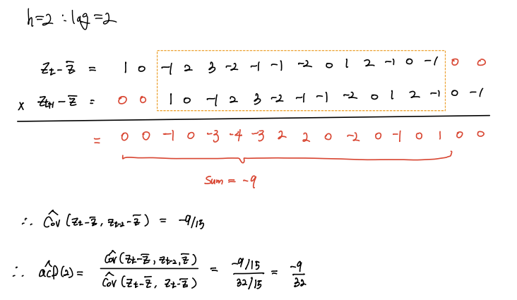

[1] 6Summary
- 확률정의 \(\to\) 확률변수 정의 \(\to\) 확률과정.
- point: 확률과정의 1개의 relization. \(\Rightarrow\) 정상확률과정
- 정상성(Stationary): iid의 약화버전
- 평균이 \(t\)에 depend하지 X
- 분산이 \(t\)에 depend하지 X
- \(lag=1,2,3,\dots\)에 대해서 \(\text{Cov}\)가 \(t\)에 depend하지 X
- 모델: \(AR(1), AR(2), AR(p), ...\)
- 모델을 세우는 이유? 현상을 설명 + 예측 + anomally detection + \(\cdots\)
- ex. 모델1: 삼성전자 주가 = 과거값 + 랜덤오차(=white noise) \(\to\) 비정상1
- ex. 모델2: 삼성전자 주가 = 0.9*과거값 + white noise \(\to\) 정상
- ex. 모델3: 삼성전자 주가 = 0.45*과거값 + white noise + 기세 \(\to\) ? AR(p)
모델을 세운다 \(\Rightarrow\) 정상인지 check! (이 과정이 매우 고통스럽다..) \(\Rightarrow\) (1) 특성방정식을 풀어서 단위근의 절대값이 ~~ (2) 모델별로 암기2
- 질문
모델 1,2,3… \(\to\) AR계열의 모델.
세운 모델에서 정상성을 체크하는 것은 다음과 같다.
- AR모델 중 적당한 후보를 고른다.
- 정상성 check!
- 통과하면 사용 \(\to\) goodness of fit.3
(i),(ii)를 종합하면, 정상성을 만족하는 AR모델 중 적당한 모델을 고르겠다는 것이죠.
그럼 삼성전자 주가가 정상성을 만족하는 AR모델 중 하나라는 증거가 어딨냐?
사실 증거가 없었음. 삼성전자 주가는 과거값 플러스 랜덤오차 아닐까? 라고 나이브하게 생각했던 것이였다.
그렇다면 뭐라고 답변해야 할까?
- 답변 : ACF를 그려보니까 AR모델이라고 판단됩니다.
논리전개
AR(p) 모델의 이론적인 ACF는 1.exponential decay function4 혹은 2.damped sine wave5
그런데 삼성전자 주식의 \(\widehat{ACF}\)6를 그려보니, exponential decay 혹은 damped sine이 나왔어요.
따라서 삼성전자 주식은 \(AR(p)\) 모델 중 하나를 따른다고 볼 수 있습니다.
- 재질문: \(AR(p)\) 모델 \(\to\) \(ACF\)는 exponential-decay or. damped-sine 이건 맞는데, \(ACF\)가 exponential-decay or. damped-sine \(\to\) \(AR(p)\)가 맞다는 보장은 없지 않느냐?

즉, 답변의 논리가 성립하려면 “ACF가 모델을 유일하게 결정” 한다는 전제가 필요.7
당연히 성립 안합니다.8
- 반론: “ACF가 모델을 유일하게 결정못함” But. 모델의 범위를 “정상시계열”에 한정하면 “ACF가 모델을 유일하게 결정함.” <- 매우매우 중요합니다.
- 결론: ACF를 파악하는 일이 매우 중요함.
시계열의 처음과 끝은 ACF..!
모델을 선택할 수 있어요! 우리가 배운 AR모델에 한하여 생각해보면, AR모델에 대한 이론적인 ACF를 계산을 했잖아요. AR모델은 이런 모양이다~ 그런데 정상시계열에 한정해서 역도 성립한다고 했죠? AR모델이면 ACF가 이런모양이다 이건 당연히 성립하는데, 정상시계열에 한정하여 ACF를 그렸더니 이런 모양이 나왔어 그럼 AR모델이네? 이런 논리가 맞다는 말입니다.
그래서 시계열 받자마자 ACF를 파악해야 합니다. ACF를 파악하려면 우리가 배운 ACF는 이론적인 ACF이기 때문에 ACF의 Sample 버전을 배웁니다. 이것을 SACF라고 표현해요.
# \(SACF, \widehat{ACF}\)
교재 5.3, p193
\(\widehat{acf} = \hat{\rho}(h)=\frac{\hat{\gamma}(h)}{\hat{\gamma}(0)}, \quad \hat{\gamma}(h) = \frac{\sum_{i=1}^{n-h}(Z_t-\bar{Z})(Z_{t+h}-\bar{Z})}{n}, h=0,1,2,\dots\)
연습문제 5.2
다음의 시계열이 주어졌다. SACF \(\hat{\rho}_k, k=1,2,3\)과 \(\hat{\phi}_{kk},k=1,2,3\)을 직접 계산하라.
\(Z_t = \{\dots, 7,6,5,8,9,4,5,5,4,6,7,8,5,6,5,\dots\}\)
\(\bar{Z} = \frac{90}{15}=6\)
- \(h=0: lag=0\)
| t | 1 | 2 | 3 | 4 | 5 | 6 | 7 | 8 | 9 | 10 | 11 | 12 | 13 | 14 | 15 |
|---|---|---|---|---|---|---|---|---|---|---|---|---|---|---|---|
| \(Z_{t}-\bar{Z}\) | 1 | 0 | -1 | 2 | 3 | -2 | -1 | -1 | -2 | 0 | 1 | 2 | -1 | 0 | -1 |
| \(Z_{t+h}-\bar{Z}\) | 1 | 0 | -1 | 2 | 3 | -2 | -1 | -1 | -2 | 0 | 1 | 2 | -1 | 0 | -1 |
| x | 1 | 0 | 1 | 4 | 9 | 4 | 1 | 1 | 4 | 0 | 1 | 4 | 1 | 0 | 1 |
- \(\widehat{cov}(Z_t-\bar{Z}, Z_t-\bar{Z})= \frac{32}{15}\)
- \(h=1 : lag=1\)

- \(h=2 : lag=2\)

- 위의 내용을 실습을 통해서 확인해보자.
R 실습
다음의 시계열이 주어졌다. SACF \(\hat{\rho}_k, k=1,2,3\)과 \(\hat{\phi}_{kk},k=1,2,3\)을 직접 계산하라.
- 방법1: 직접 구현
## lag0
yt<- c(zt-mean(zt))
gamma0 <- sum(yt*yt)/15
cat('gamma0: ', sum(yt*yt),'/',15,'\n')
cat('rho0: ', gamma0/gamma0)gamma0: 32 / 15
rho0: 1## lag1
yt1<- c(yt,0) # 맨 마지막에 0 추가.
yt_lag1<-c(0,zt-mean(zt)) # 한 칸씩 밀린 형태.
gamma1<-sum(yt1*yt_lag1)/15
rho1 <- gamma1/gamma0
cat('rho1: ', sum(yt1*yt_lag1),'/',sum(yt*yt))
cat(' =', rho1)rho1: 3 / 32 = 0.09375## lag2
yt2<-c(yt,0,0) # 맨 마지막에 0 2개 추가.
yt_lag2<-c(0,0,zt-mean(zt))
gamma2<-sum(yt2*yt_lag2)/15
rho2<-gamma2/gamma0
cat('rho2: ',sum(yt2*yt_lag2),'/',sum(yt*yt))
cat(' =', rho2)rho2: -9 / 32 = -0.28125## lag3
yt3<-c(yt,0,0,0)
yt_lag3<-c(0,0,0,yt)
gamma3<-sum(yt3*yt_lag3)/15
cat('rho3: ', sum(yt3*yt_lag3),'/',sum(yt*yt))rho3: -4 / 32- 방법2: 함수이용 (이렇게 하면 됩니다!)

- rho0, rho1, rho2,…을 의미